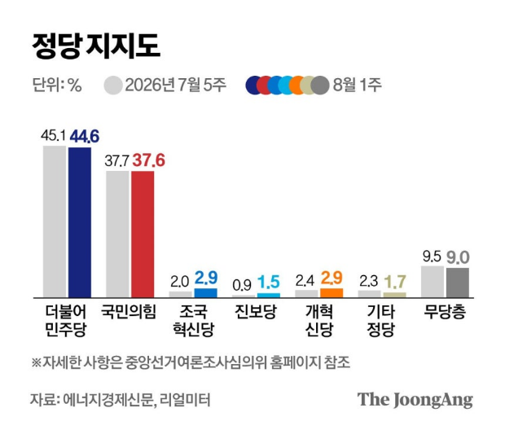

8/11(화) · 기준 2026-08-10 22:00 ~ 2026-08-11 06:00
엑셀 다운로드
"이미지 다운로드"를 누르거나, 이미지를 길게 눌러 저장한 뒤 카톡으로 보내세요.

![李대통령 지지율 43.3%…4주째 하락해 취임 후 최저[리얼미터]](images/infographics/article_01_2.png)

![[연합뉴스] 콜롬비아 규모 7.4 지진 발생](images/graphics/연합뉴스_01.jpg)
![[연합뉴스] 메가프로젝트 2차 회의 주요 내용](images/graphics/연합뉴스_02.jpg)
![[뉴시스] 민주 45.4% 국힘 24.9%… 양당 지지도 격차 20.5%p](images/graphics/뉴시스_03.jpg)
![[뉴시스] 이 대통령 국정수행 지지율 44.3%](images/graphics/뉴시스_04.jpg)
![[뉴시스] 이란의 강경 청구서…트럼프 출구전략 흔들](images/graphics/뉴시스_05.jpg)
![[뉴스1] [그래픽] 온열질환자 발생 현황](images/graphics/뉴스1_06.jpg)
![[뉴스1] [그래픽] 코스피·코스닥 추이](images/graphics/뉴스1_07.jpg)
![[뉴스1] [오늘의 증시] 8월 10일 코스피 코스닥](images/graphics/뉴스1_08.jpg)
![[뉴스1] [오늘의 그래픽] 7월 '신고가' 쏟아진 서울…8월 '보유세 급매' 2000건](images/graphics/뉴스1_09.jpg)
![[뉴스1] [그래픽] 이재명 대통령 국정수행 평가](images/graphics/뉴스1_10.jpg)
![[뉴스1] [그래픽] 정당 지지도 추이](images/graphics/뉴스1_11.jpg)
![李대통령 지지율 43.3%…4주째 하락해 취임 후 최저[리얼미터]](images/article_01.png)


![美 이란 협상 교착에 일제히 하락 마감[뉴욕증시]](images/article_07.png)


![인천 앞바다 모터보트 실종 낚시객 3명, 11시간 만에 구조 [영상]](images/article_11.png)


{kind=link}
{kind=link}